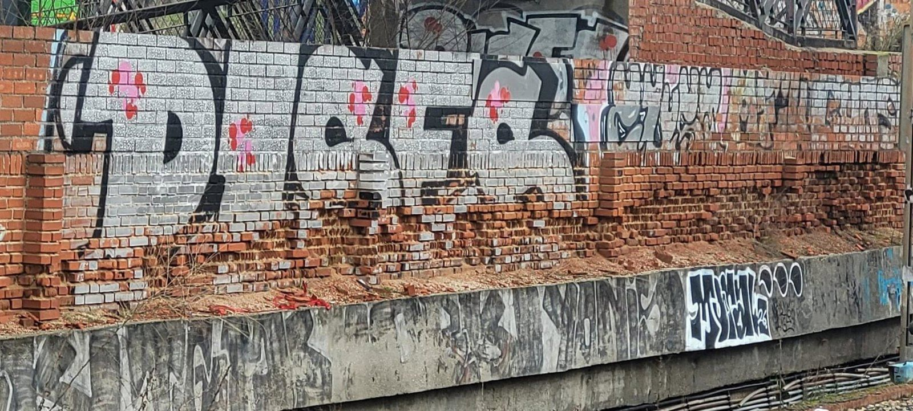
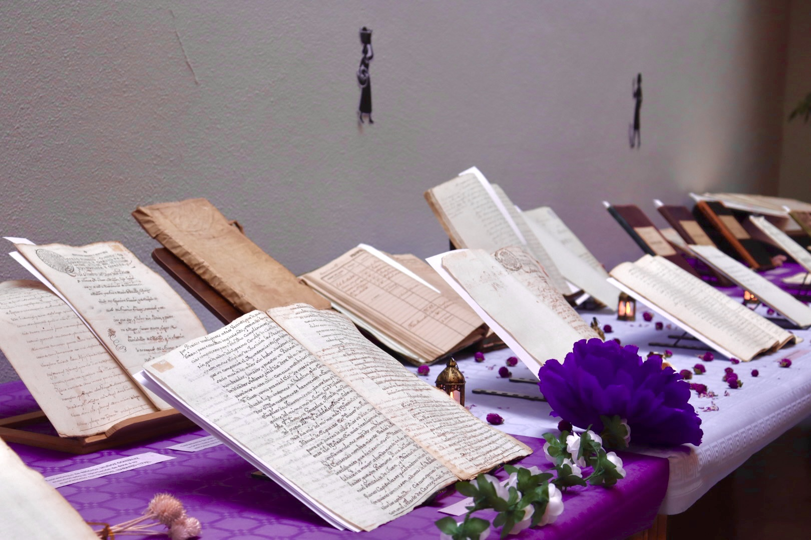

Cultura
La Feria de Abril fuenlabreña
Los fuenlabreños se visten de lunares y cerca de 10.000 personas convierten la Plaza de España en un gran tablao flamenco durante el fin de semana.
Los fuenlabreños se visten de lunares y cerca de 10.000 personas convierten la Plaza de España en un gran tablao flamenco durante el fin de semana.

Héctor, un joven emprendedor de Fuenlabrada, relata los retos de crear una empresa desde cero: inestabilidad, falta de ayudas institucionales y los obstáculos de la burocracia.
Tiempo, cuidados y persianas que se levantan cada mañana dibujan el mapa del emprendimiento femenino en Fuenlabrada.

Los retrasos diarios, las incidencias constantes y la reciente caída de un muro cerca de las vías centran el choque político entre la oposición y el Gobierno local.

Un viaje por los documentos del Archivo Municipal para rescatar del olvido a las mujeres que, desde el siglo XVI, ayudaron a construir la ciudad.